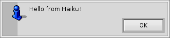
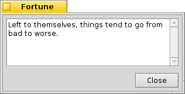
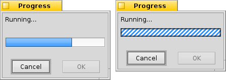
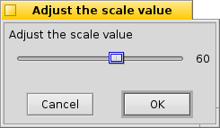

Shanty is a program for displaying dialog boxes from command line and scripts under Haiku operating system. It is almost compatible with GNOME Zenity.
This program is released under the MIT License (see the LICENSE file).
You can build Shanty by executing the jam command from inside the source directory.
Then you should copy the shanty executable to /boot/system/bin
Shanty can be used to create simple graphical applications from scripts. It is possible to display information to the user and get input from the user.
In all dialogs you can test the return value to check if the user clicked on the Cancel button or closed the dialog.
For most of the dialogs, these general options are available:
--title=TITLE Set the dialog title
--width=WIDTH Set the width
--height=HEIGHT Set the height
These dialogs are used to display simple alert to the user. Available options are:
--info Display info dialog
--warning Display warning dialog
--error Display error dialog
--text=TEXT Set the dialog text
Example:
shanty --info --text 'Hello from Haiku!'

This dialog is used for asking a simple Yes/No question. Available options are:
--question Display question dialog
--text=TEXT Set the dialog text
--ok-label=TEXT Set the label of the Ok button
--cancel-label=TEXT Set the label of the Cancel button
You can test the return value, to see if the user answered Yes.
Example:
if shanty --question --text "Is computer on?"; then
shanty --info --text="It seems it is."
else
shanty --info --text="No it isn't."
fi
This dialog allows you to get a single line of text from the user. Entered text is sent to standard output. Available options are:
--entry Display text entry dialog
--text=TEXT Set the dialog text
--entry-text=TEXT Set the entry text
--hide-text Hide the entry text
Example:
shanty --entry --title="Login" --text="Enter password:" --hide-text

This dialog displays multiline text. If the filename is not specified, text is read from the standard input. Available options are:
--text-info Display text information dialog
--filename=FILENAME Open file
--editable Allow changes to text
If invoked with the --editable option, text is sent to standard output.
Example:
fortune | shanty --title="Fortune" --text-info

This dialog is used for selecting a date. Selected date is sent to standard output. Available options are:
--calendar Display calendar dialog
--text=TEXT Set the dialog text
--day=DAY Set the calendar day
--month=MONTH Set the calendar month
--year=YEAR Set the calendar year
--date-format=PATTERN Set the format for the returned date

This dialog is used for selecting files or directories. Available options are:
--file-selection Display file selection dialog
--filename=FILENAME Set the filename
--multiple Allow multiple files to be selected
--directory Activate directory-only selection
--save Activate save mode
--separator=SEPARATOR Set output separator character
This dialog indicates progress or activity. Input is read from the standard input. Lines containing a number (0-100) update the progress bar. Displayed text can be changed by starting a line with a # character, followed by the message.
--progress Display progress indication dialog
--text=TEXT Set the dialog text
--percentage=PERCENTAGE Set initial percentage
--pulsate Pulsate progress bar
--auto-close Dismiss the dialog when 100% has been reached
--auto-kill Kill parent process if cancel button is pressed
--no-cancel Hide the Cancel button
If invoked with the --pulsate option, dialog only indicates activity, until an EOF character is read from input.

This dialog is used for selecting a value using a slider. Selected value is sent to standard output. Available options are:
--scale Display scale dialog
--text=TEXT Set the dialog text
--value=VALUE Set initial value
--min-value=VALUE Set minimum value
--max-value=VALUE Set maximum value
--step=VALUE Set step size
--print-partial Print partial values
--hide-value Hide value

Not yet implemented...
Not yet implemented...